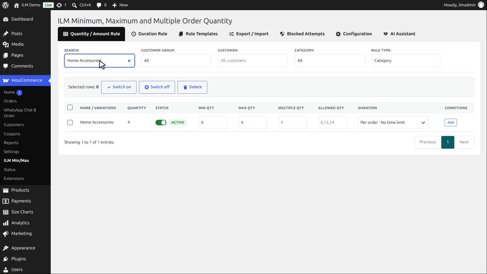
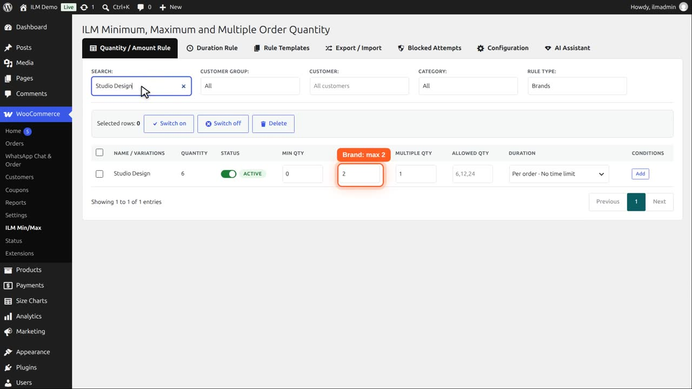
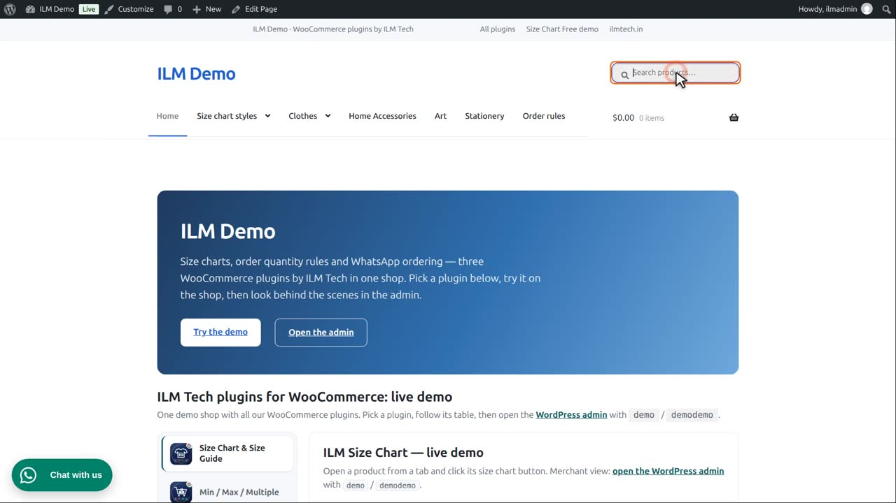
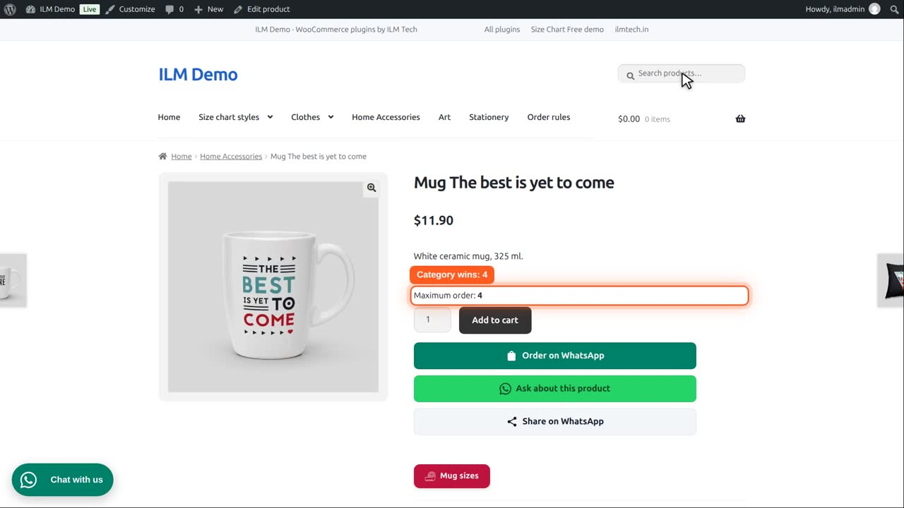
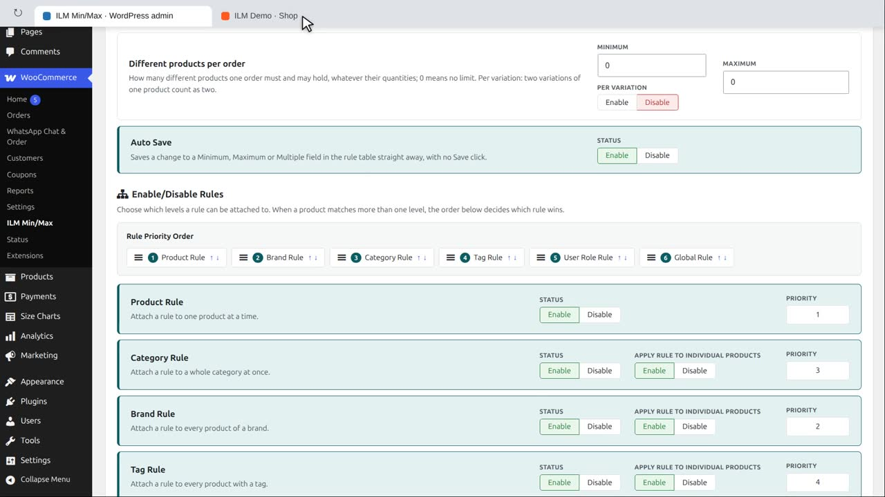

Pro add-on. This feature needs the Pro add-on. See Free and Pro.
Choose which levels a rule can be attached to. When a product matches more than one level at once (for example it belongs to a Category rule and a Brand rule), the Rule Priority Order below decides which one wins:
Product > Category > Brand > Tag > User Role > Global
| Level | What it does |
|---|---|
| Product Rule | Attach a rule to one product at a time. |
| Category Rule | Attach a rule to a whole category at once. |
| Brand Rule | Attach a rule to every product of a brand. |
| Tag Rule | Attach a rule to every product with a tag. |
| User Role Rule | Attach a rule to a user role, so different roles get different limits. |
| Global Rule | One rule for the whole shop, used when nothing more specific matches. |
Apply Rule to Individual Products (shown for Category / Brand / Tag / User Role / Global): Enable checks the limit separately for each product under that rule; Disable pools every product under the rule into one shared total.
The Home Accessories category has a maximum of four.

And the brand Studio Design has a maximum of two. Our mugs belong to both.

On the Configuration tab, the Rule Priority Order decides. By default: product, category, brand, tag, user role, then global.

Category comes before brand, so the mug shows maximum order four.

Move Brand Rule in front of Category Rule, with its up arrow or by dragging it. The new order is saved at once.

Now the brand rule wins, and the same mug shows maximum order two.